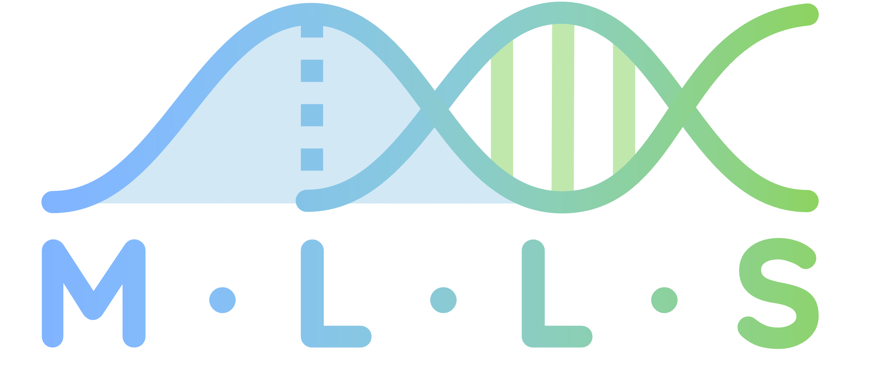
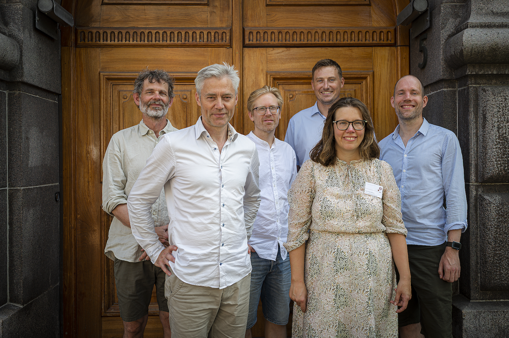
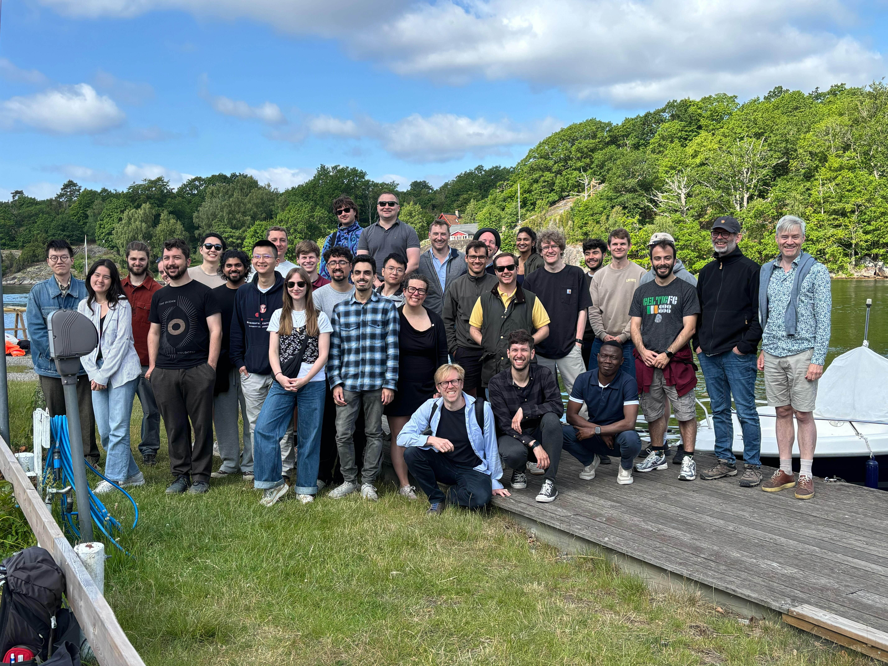
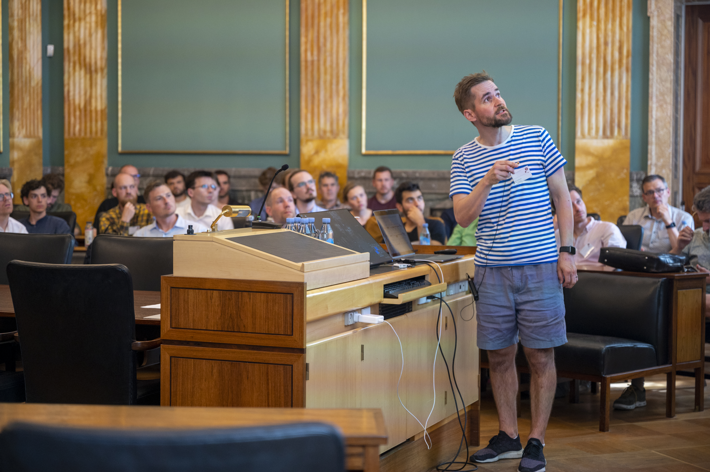
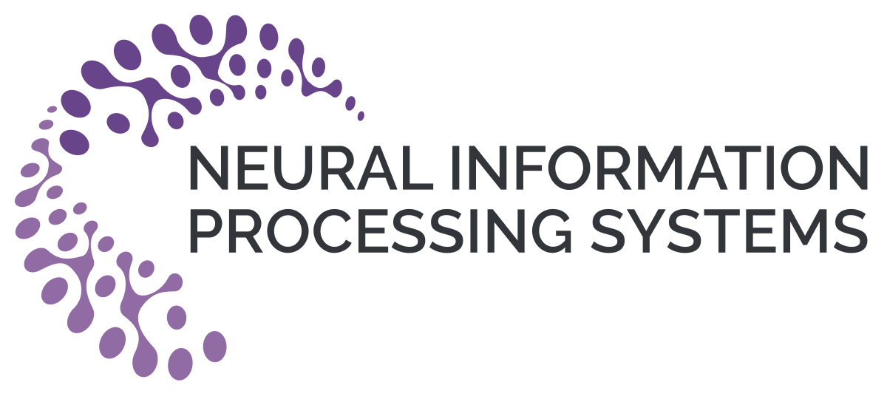

Professor Ole Winther, PI
University of Copenhagen and Technical University of Denmark
Hierarchical generative models, approximative inference, NLP, gene regulation and biological sequence analysis and foundation models
ole.winther@bio.ku.dk


The Center for Basic Machine Learning in Life Science (MLLS) was established on January 21, 2021 with the generous support of the Novo Nordisk Foundation. We bring together leading machine learning research groups in Denmark to establish a solid foundation for future data science progress in the life sciences.
Artificial intelligence and data science are rapidly changing how science is being conducted. Researchers increasingly rely on a data-centric view, where experimental data is used to discover patterns in data and phrase new scientific hypotheses.
To extract information from data, modern data science techniques often “convert” the raw sensory measurements into abstract data representations, but these representations are often ill-understood and difficult to interpret, which hinders their use for phrasing robust hypotheses. This is particularly true in the life sciences, where data typically is “noisy” and incomplete.
To provide solutions to these problems, we conduct basic research in machine learning that is motivated and informed by fundamental problems in biology and biomedicine.
We conduct the basic machine learning research needed to estimate representations of biomedical data that are
These representations are both predictive and knowledge discovery tasks.
Our research focuses on four themes, and each theme advances different aspects of representation learning for life science and support each other:
Hierarchical generative models, approximative inference, NLP, gene regulation and biological sequence analysis and foundation models
ole.winther@bio.ku.dk
Representation learning for gene expression data and DNA sequences. Machine learning in bioinformatics.
akrogh@di.ku.dk
Sequence modelling, protein representation learning, Bayesian inference (Markov chain Monte Carlo).
wb@di.ku.dk
Geometric modeling, machine learning for biomedical imaging, structured data (trees, networks, …)
afhar@dtu.dk
Deep generative models, missing values, Bayesian modeling, approximate inference.
jefr@dtu.dk
Random geometry, uncertainty quantification, deep generative models.
sohau@dtu.dk
Coordination
| Seminar speaker | Topic | Year |
|---|---|---|
| Jean Feydy | Modelling protein surfaces | 2021 |
| Gustav Lindved | Predicting protein thermostability using language models. | 2021 |
| Jakob Havtorn | Out-of-distribution testing for Hierarchical VAE. | 2021 |
| Felix Teufel | Improved signal peptide prediction using protein language models. | 2021 |
| Niels Bruun Ipsen | Not-MIWAE: Deep Generative Modelling with Missing not at Random Data. | 2021 |
| Pola Schwöbel | Last Layer Marginal Likelihood for Invariance Learning. | 2021 |
| Didrik Nielsen | SurVAE Flows: Surjections to Bridge the Gap between VAEs and Flows. | 2021 |
| Kasra Arnavaz | Semi-supervised, Topology-Aware Segmentation of Tubular Structures from Live Imaging 3D Microscopy. | 2021 |
| Roshan Rao | MSA Transformers for protein sequences. | 2021 |
| Lars Kai Hansen | Values in AI. | 2021 |
| Jonas Busk | Calibrated Uncertainty for Molecular Property Prediction. | 2021 |
| Frederik Warburg | Bayesian Triplet loss. | 2021 |
| Veronika Cheplygina | How our publication traditions hinder efficient discovery. | 2021 |
| Eli Weinstein | Latent alignment as a replacement for multiple sequence alignment. | 2021 |
| Giorgio Giannone | Few-Shot Generative Models. | 2021 |
| Eli Weinstein | A structured observation distribution for biological sequence prediction. | 2021 |
| Arnor Sigurdsson | Deep integrative models for large-scale human genomics. | 2021 |
| Pablo Moreno-Muñoz | Gaussian processes. | 2021 |
| Chris Sander | Machine learning for hard biological problems — three examples. | 2021 |
| Kresten Lindorff-Larsen | Perspective on Alphafold 2 and remaining problems. | 2021 |
| Albert Jelke Kooistra | Understanding drug selectivity and individual responses. | 2021 |
| Kristoffer Stensbo-Smidt | Flow-transformed Gaussian processes. | 2021 |
| Eike Petersen | Responsible and Regulatory Conform ML for Medicine. | 2021 |
| Guan Wang | Graph2Graph Learning with Conditional Autoregressive Models. | 2021 |
| Enzo Ferrante | Gender bias in X-ray classifiers. | 2021 |
| Germans Savcisens | Life2Vec: Transformers for behavior representation. | 2021 |
| George Papamakarios | Normalizing flows for atomic solids. | 2021 |
| Markus Heinonen | Low-rank Bayesian neural networks. | 2021 |
| Cong Geng | Bounds all around: training energy-based models with bidirectional bounds. | 2022 |
| Simon Bartels | How much data do we need? | 2022 |
| Viktoria Schuster | The deep generative decoder: a minimum viable model. | 2022 |
| Simon Olsson | Machine Learning for Molecular Dynamics of Proteins. | 2022 |
| Damien Garreau | What does LIME really see in images? | 2022 |
| Ragnhild Ørbæk Laursen | NMF for somatic mutations in cancer genomics. | 2022 |
| Agustinus Kristiadi | Low-Cost Bayesian Methods for Fixing Overconfidence. | 2022 |
| Jes Frellsen | How to deal with missing data in supervised deep learning? | 2022 |
| Ole Winther | DeepTMHMM: Deep Learning for Transmembrane Topology Prediction. | 2022 |
| Anders Krogh | Scaling issues in maximum likelihood estimation. | 2022 |
| Beau Coker | Wide Mean-Field Variational BNNs Ignore the Data. | 2022 |
| Nicholas Kramer | A probabilistic perspective on numerical solution of differential equations. | 2022 |
| Pascal Notin | Disease variant prediction with deep generative models. | 2022 |
| Nikolaj Thams | Robustness to dataset shift. | 2022 |
| Siavash Bigdeli | Deep Statistical Image Modeling. | 2022 |
| Mark van der Wilk | Meaningful Metrics for Probabilistic Predictions. | 2022 |
| Marco Miani | Laplacian Autoencoders for Stochastic Representations. | 2022 |
| Theo Karaletsos | Black-box coreset variational inference. | 2022 |
| Raghavendra Selvan | On the Carbon Footprint of Deep Learning. | 2022 |
| Sebastian Weichwald | Causal Models on the Brink. | 2022 |
| Victor García Satorras | Equivariant Diffusion for Molecule Generation in 3D. | 2022 |
| Yogesh Verma | Modular Flows: Differential Molecular Generation. | 2023 |
| Andrew White | Explaining molecular properties with natural language. / Deep learning for molecular design with few data points. | 2023 |
| Marloes Arts | Diffusion Models and Force Fields for Coarse-Grained MD. | 2023 |
| Stefan Sommer | Stochastic morphometry and sampling of conditioned stochastic processes. | 2023 |
| Rocío Mercado | Deep generative models for biomolecular engineering. | 2023 |
| Ignacio Peis | Missing Data Imputation and HyperGenerators. | 2023 |
| Ola Rønning | Probabilistic mixture model approximation with Stein mixtures. | 2023 |
| Martin Jørgensen | Bézier Gaussian Processes. | 2023 |
| Pierre-Alexandre Mattei | Are ensembles getting better all the time? | 2023 |
| Frederikke Marin | I Can’t Believe It’s Not Better. | 2023 |
| Søren Hauberg | All Layers Marginal Likelihood Training with Fully Correlated Linearized Laplace Approximations. | 2023 |
| Mingyu Kim | Enhancing Neural Radiance Fields with Regularization. | 2023 |
| Antoine Wehenkel | Simulation-based Inference for Cardiovascular Models. | 2023 |
| Sussane Ditlevsen | Warning of a collapse of the Atlantic overturning circulation. | 2024 |
| Wessel Bruinsma | Autoregressive Conditional Neural Processes. | 2024 |
| Oliver Stegle | Enhancing human genetics with new computational tools and single-cell sequencing. | 2024 |
| Gabriel Niels Damsholt | Uncertainty Estimation for DNNs via SDEs. | 2024 |
| Lasse Blaabjerg | Protein variant effect prediction using ML. | 2024 |
| Sindy Loewe | Rotating Features for Object Discovery. | 2024 |
| Berian James | Scalable physical inference with hypernetworks. | 2024 |
| Matthias Bauer | High-performance low-complexity neural compression. | 2024 |
| Carl Hvarfner | Vanilla Bayesian Optimization in high dimensions. | 2024 |
| Frederikke Isa Marin & Felix Teufel | BEND: Benchmarking DNA Language Models. | 2024 |
| Joris Fournel | Medical image segmentation quality control. | 2024 |
| Michaela Areti Zervou | Protein Sequence Classification and Generation. | 2024 |
| Marcelo Hartmann | Warped Geometric Information in optimization. | 2024 |
| Joakim Edin | XAI, medical coding, and EHRs. | 2024 |
| Filip Tronarp | Robust Cholesky Discretization of Gauss-Markov models. | 2024 |
| Ira Ktena | Promises and perils of AI innovation in healthcare. | 2024 |
| Karthik Bharath | Rolled Gaussian process models for curves on manifolds. | 2024 |
| Christian Igel | Bayesian vs. PAC-Bayesian DNN Ensembles. | 2024 |
| Henry Moss | Return of the Latent Space Cowboys: rethinking VAEs in Bayesian Optimisation. | 2024 |
| Kristoffer Wickstrøm | Uncertainty estimation in representation learning explainability. | 2024 |
| Peter Mørch Groth | Kermut: Composite kernel regression for protein variant effects. | 2025 |
| Hrittik Roy | Reparameterization invariance in approximate Bayesian inference. | 2025 |
| Melih Kandemir | Embodied Estimators for Full Autonomy. | 2025 |
| Louis Ohl | A tutorial on discriminative clustering and mutual information. | 2025 |
| Beatrix M. G. Nielsen | Challenges in explaining representational similarity. | 2025 |
| Søren Wengel Mogensen | Causal discovery and weak equivalence of graphs. | 2025 |
| Eli N. Weinstein | Causal Molecular Design. | 2025 |
| Johnny Xi | Causal Velocity Models: Counterfactual Transports via Score Estimation. | 2025 |
17.09.2025 – 18.09.2025
Generative models and uncertainty quantification lie at the heart of Bayesian modelling and inference. At this small meeting, we discuss recent developments within the field. The meeting is deliberately kept small in order to ensure that discussion remains honest, lively and interesting.
25.08.2025
MLLS PI gathering to discuss future research.
15.06.2025 – 18.06.2025
Annual retreat for MLLS professors and students with hackathons and social activities.

18.09.2024 – 19.09.2024
Generative models and uncertainty quantification lie at the heart of Bayesian modelling and inference. At this small meeting, we discuss recent developments within the field. The meeting is deliberately kept small in order to ensure that discussion remains honest, lively and interesting.
25.04.2024 – 28.04.2024
Annual retreat for MLLS professors and students with hackathons and social activities.
15.04.2024 – 16.04.2024
The complexity and scale of biological data are growing at an explosive rate. Currently, the main bottleneck towards new biological insights is often our ability to interpret existing data rather than limitations in the availability of data. In recent years, generative models have provided spectacular advances within various biological domains, and the community of researchers applying generative models to address biological problems is rapidly growing. This conference is an attempt to highlight some of the important current developments in the interface between generative models and life science—with a particular focus on the area of biomolecular modelling and relevant machine learning tools.
20.09.2023 – 21.09.2023
Generative models and uncertainty quantification lie at the heart of Bayesian modelling and inference. At this small meeting, we discuss recent developments within the field. The meeting is deliberately kept small in order to ensure that discussion remains honest, lively and interesting.
18.04.2023 – 19.04.2023
Annual retreat for MLLS professors and students with hackathons and social activities.
01.12.2022
MLLS PI gathering to discuss future research.
14.09.2022 – 15.09.2022
Generative models and uncertainty quantification lie at the heart of Bayesian modelling and inference. At this small meeting, we discuss recent developments within the field. The meeting is deliberately kept small in order to ensure that discussion remains honest, lively and interesting.
15.08.2022 – 16.08.2022
Formal celebration of the start of MLLS.

12.10.2021 – 13.10.2021
Generative models and uncertainty quantification lie at the heart of Bayesian modelling and inference. At this small meeting, we discuss recent developments within the field. The meeting is deliberately kept small in order to ensure that discussion remains honest, lively and interesting.

21.06.2022
The symposium will explore modern AI and machine learning as drivers for scientific discovery and far-reaching applications within life science, health science and biotech. Crucial in this transformation is the ability to extract meaningful associations and causalities from messy real-world data – a paradigm shift from more traditional data analysis. In this workshop we take a snapshot look at how modern machine learning and AI currently transform areas like medical research and clinical practice.
19.04.2022 – 20.04.2022
Annual retreat for MLLS professors and students with hackathons and social activities.

07.12.2021 – 10.12.2021
NeurIPS 2022 will be a Hybrid Conference with a physical component at the New Orleans Convention Center during the first week, and a virtual component the second week.
07.12.2021 – 11.12.2021
This NeurIPS 2021 meetup takes place in Copenhagen aiming to act as the central meetup for this area. The meetup will feature a collection of focused reading groups. PhD students within ELLIS Copenhagen may get ECTS credit for joining these reading groups.